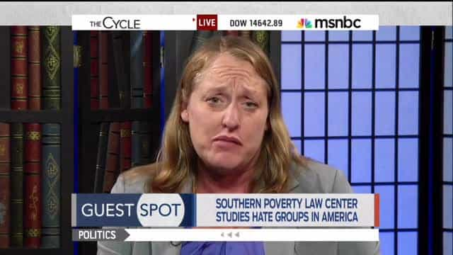

It looks like the Southern Poverty Law Center, one of America’s premier ethnic shakedown organizations, is running low on donations again. This week, they announced the new edition of their “hate group” list, a record of supposed white supremacist, far-right terrorist organizations operating in the United States. Most notably, Return Of Kings has been added to the list as a “male supremacy” organization, alongside men’s rights’ group A Voice For Men:
Also, for the first time, the SPLC added two male supremacy groups to the hate group list: A Voice for Men, based in Houston, and Return of Kings, based in Washington, D.C. The vilification of women by these groups makes them no different than other groups that demean entire populations, such as the LGBT community, Muslims or Jews, based on their inherent characteristics.
This isn’t the first time that ROK publisher Roosh has been targeted by the SPLC: in 2012, he was named in one of the organization’s “Intelligence Reports,” alongside A Voice for Men and my old site In Mala Fide. Roosh later cited the experience as the final push that moved him to the dissident right.
It’s clear that the SPLC is going after AVFM and ROK in an attempt to scare liberal old biddies into giving them more money, because their attack was sloppy and poorly-handled. For example, the SPLC claims that ROK is headquartered in Washington D.C., even though it’s a website with no physical address or full-time employees.
Most hilariously, the SPLC’s dossier on alt right figure Richard Spencer confused him with Robert Spencer, the founder of Jihad Watch, suggesting they outsourced the research to a stupid intern.
Having said this, the SPLC’s attack can’t be handwaved away. Much like the Anti-Defamation League, the SPLC’s purpose in naming organizations as “hate groups” or individuals as “extremists” is designed to incite violence against them. Ever since the election of Donald Trump, the left in America has become increasingly violent, and the SPLC’s list is a dog whistle to antifa and other groups with the intent of hurting or possibly killing Roosh and other targeted individuals.
How The Southern Poverty Law Center Fuels Leftist Violence
The SPLC, ADL, and other related organizations like to masquerade as legitimate news organizations who are merely calling attention to violent, anti-government extremists, but this is as far from the truth as possible. In actuality, the SPLC functions as an intelligence-gathering operation for antifa and other violent leftists, compiling dossiers on chosen targets with the implicit message of, “It’s okay to hurt, maim, or kill these people: they’re Nazis/misogynists/homophobes, after all.”
“Hate group” lists compiled by the SPLC have been used by leftist criminals in the past to identify targets for assassination. For example, in 2013, a left-winger committed a mass shooting against the Family Research Council after seeing them named by the SPLC as an “anti-gay” group. More recently, we’ve seen leftists openly going after Republican politicians and public figures, such as the attempted assassination of House Majority Leader Steve Scalise by Bernie Sanders supporter James Hodgkinson.
This is not the first time that figures in the dissident right have been targeted in such a way. Last summer, the ADL released a hit list of alt right and alt lite figures such as Mike Cernovich, Richard Spencer, and myself, with the purpose of inciting violence against us. In response, Cernovich and several other alt lite figures launched the #ADLTerror hashtag on Twitter with the intent of bringing attention to the fact that their lives were now in danger.
Lies, Damned Lies, And Lists

Moreover, the SPLC can’t even be consistent with the criteria it uses to evaluate “hate groups.” In response to their attack on A Voice For Men, ex-feminist filmmaker Cassie Jaye (creator of the documentary The Red Pill) revealed that in 2016, the SPLC told her that AVFM didn’t fit their criteria for a group since they lacked an “official group policy,” due to the fact that AVFM was just a website and a forum. The SPLC has not yet revealed to Jaye why they changed their policy.
Regardless, it is clear that the international left is ramping up for a broader attack on the dissident right. While the alt right was the focus of much of the left’s ire last year, the movement has been weakened due to systematic deplatforming, failed stunts such as Charlottesville, and personality conflicts between its major leaders. As a result, the left now feels confident in going after sites like Return Of Kings that had previously been out of the line of fire.
Dissident right and alternative media figures should prepare themselves for an onslaught from the globalists in the coming months. With the 2018 midterm elections coming up and the Russia investigation in the U.S. unraveling, the left is looking to strike out at anyone who challenges their power or narrative. As the SPLC’s actions show, they are not above physically hurting or killing their enemies to achieve their goals.
Read More: Anti-Defamation League’s Hate List Puts Alt Right And Alt Lite Figures At Risk Of Leftist Violence